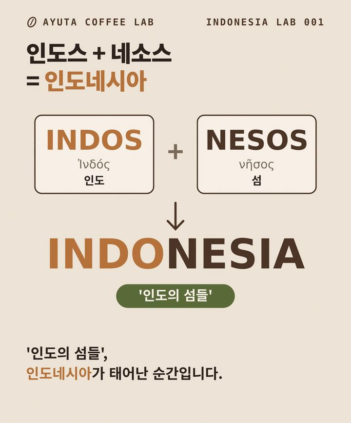
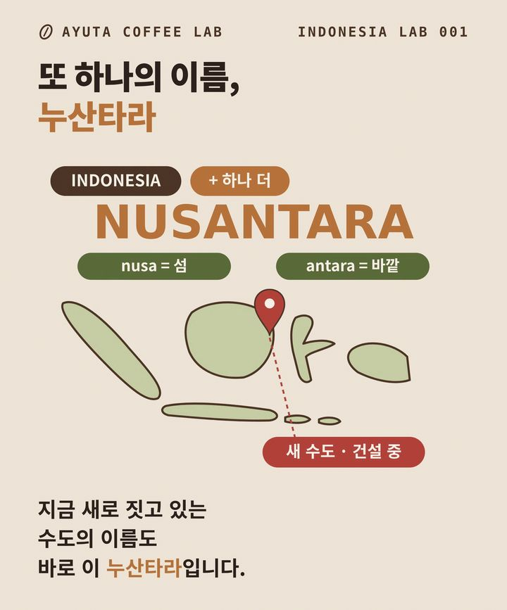

인도네시아 이름에 '인도'가 들어간 이유
인도와 붙어 있지도, 인도에 속한 적도 없는 나라.
그런데 왜 이름이 인도네시아일까요?

유럽 사람들의 '인디즈'
옛 유럽 사람들은 인도부터 중국 사이의 넓은 바다와 섬들을 통틀어 '인디즈(the Indies)'라고 불렀어요. 그래서 지금의 인도네시아는 오랫동안 '네덜란드령 동인도'로 불렸습니다. 이름부터 남이 붙인 이름이었던 거죠.
1850년, 학자가 만든 단어
1850년, 싱가포르에서 활동하던 영국 학자 제임스 로건이 그리스어 '인도스(인도)'와 '네소스(섬)'를 합쳐 '인도네시아'라는 말을 썼어요. 뜻을 풀면 '인도 쪽의 섬들'이에요. 처음에는 지역을 가리키는 학술 용어였어요.

학자의 말에서 우리의 이름으로
이 말을 자기 이름으로 받아들인 건 독립을 꿈꾸던 청년들이었어요. 1928년 '청년 맹세(숨파 프무다)'에서 '하나의 조국, 하나의 민족, 하나의 언어, 인도네시아'를 외쳤고, 1945년 독립과 함께 인도네시아는 정식 나라 이름이 됩니다. 식민지의 이름 대신, 스스로 고른 이름이었죠.
이름이 하나 더 있어요, 누산타라
인도네시아 사람들에게는 더 오래된 이름도 있어요. 옛 자바어 '누산타라', 풀면 '바깥의 섬들'이라는 뜻이에요. 지금도 '우리 섬나라'를 부를 때 자주 쓰고, 새로 짓고 있는 수도의 이름도 누산타라예요.

아유타의 답 보기
인도네시아 바로 옆에 있어요. 파푸아뉴기니의 '기니'는 아프리카 서쪽의 기니에서 왔어요. 16세기 유럽 탐험가가 이 섬 사람들이 아프리카 기니 사람들과 닮았다며 '새 기니'라고 불렀거든요. 뉴질랜드도 네덜란드의 '제일란트' 지방에서 따온 이름이에요. 나라 이름에는 그 땅을 바라본 사람들의 시선이 담겨 있어요.
아유타커피 · 010-4263-4982